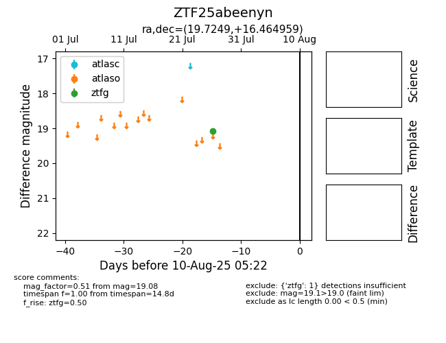

Target ZTF25abeenyn at 2025-08-10 05:22, see:
FINK: fink-portal.org/ZTF25abeenyn
Lasair: lasair-ztf.lsst.ac.uk/objects/ZTF25abeenyn
ALeRCE: alerce.online/object/ZTF25abeenyn
alt names
ZTF25abeenyn (ztf,fink)
coordinates:
equatorial (ra, dec) = (19.7249,+16.46496)
galactic (l, b) = (132.4134,-45.90061)
photometry
last ztfg=19.08
1 ztfg detections
